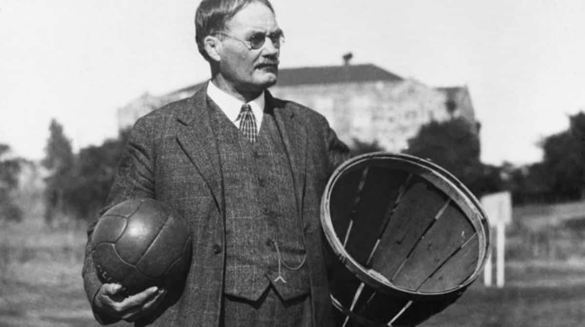

Uniforme Chicago Bulls, vel: adulto G nero aplic vel: masculino Nome do tecido: poli ster Composto do
tecido: Fibra de poli ster
(poli ster) Conte do tecido: 100 Cena aplic vel: ciclismo Cor: terno vermelho 23 tamanho: XS
Tamanhos: GG, M e P
R$ 50,00
Estrutura com Tabela de Basquete Ax Esportes Modelo N.B.A Oficial Locomoção: rodas emborrachadas que não
danificam o piso e facilitam a locomoção dentro da quadra. Tabela em vidro temperado (10mm). Aro retrátil em
aço carbono - molas de aço. Sistema elétrico (motor 2cv 4 pólos – trifásico. Trava de Segurança Peso Mala de
Concreto Estofamento protetor das laterais da base e parte frontal c/espuma (5 cm). Travamento feito através
de duas sapatas dianteira que ao acionar a “tabela”, elas se apóiam no piso, mantendo a tabela fixada não
precisando de nenhum tipo de chave para fixá-la. Medidas da tabela levantada (pronta p/ jogo): Medidas da
tabela abaixada (espaço p/ guardar): Altura: 3,95 m. Altura Minima 2,35 Largura: 1,80 mt. Comprimento: 5m
Comp. Minimo 4,10m Protetor inferior do requadro do vidro e embaixo da lança. Pintura c/ tratamento
anticorrosivo e pintura em Epóxi nas partes articuláveis. Cor: Estrutura metálica branca c/ opções em
revestimento nas cores: Azul e vermelho. Outras cores sob consulta. Peso unitário: 1300 kg Garantia: 12
meses
R$ 62.000,00
Tênis Nike Lebron Xx - Unissex Tênis Nike LeBron XX - Adulto Quase duas décadas de uma carreira que supera
todas as expectativas, LeBron James se recusou a se contentar com nada menos do que a grandeza, mesmo quando
foi ele quem estabeleceu o padrão para as próximas gerações. Agora, seu mais recente tênis exclusivo é mais
leve, próximo ao chão e turbinado. É diferente de qualquer design que LeBron já vestiu antes - confortável e
com suporte, mas com cano baixo, rápido como um relâmpago e criado para ficar à frente do estilo de jogo
frenético de hoje. Suave e ágil A unidade Zoom Air grande no antepé é curvada para oferecer flexão
multidirecional. Ela fornece retorno de energia para curvas rápidas e responsivas e oferece uma sensação de
quadra flexível que se move naturalmente com o pé. A unidade Zoom Air carregada no calcanhar aumenta o
amortecimento. Respirável na Parte de Cima O tecido arejado e respirável no cabedal é feito com mesh
dimensional que é leve, durável e contido. Detalhes do Produto Entressola de espuma Cadarços elásticos Ilhós
de metal
Tamanhos: 35, 41 e 49
R$ 950,00
O basquete foi inventado por Dr. James Naismith em 1891, na cidade de Springfield, Massachusetts, EUA. Naismith desenvolveu o esporte como uma alternativa ao futebol americano para manter os alunos do inverno ativos e saudáveis. A primeira partida de basquete foi jogada com uma bola de futebol e dois cestos de pêssegos como aros. Desde então, o esporte evoluiu significativamente, com regras padronizadas e uma crescente base de jogadores.
O basquete viu a ascensão de inúmeras estrelas ao longo de sua história. Desde lendas do passado, como Michael Jordan e Larry Bird, até os talentos contemporâneos, como LeBron James e Stephen Curry, os jogadores de basquete cativam multidões com suas habilidades extraordinárias, agilidade e capacidade de arremesso. Além disso, o basquete tem uma forte presença internacional, com atletas de todo o mundo competindo nas ligas da NBA e nas seleções nacionais.
O basquete é palco de uma série de campeonatos emocionantes, com a NBA (National Basketball Association) sendo a mais prestigiosa e seguida globalmente. A NBA reúne os melhores jogadores do mundo, proporcionando jogos incríveis, rivalidades históricas e momentos inesquecíveis. Além da NBA, competições como a NCAA March Madness e a FIBA Basketball World Cup também têm um lugar especial no coração dos fãs.
Os Jogos Olímpicos são outra plataforma importante para o basquete, onde as seleções nacionais competem pelo ouro olímpico. As históricas rivalidades entre os Estados Unidos e a antiga União Soviética, e mais recentemente entre os EUA e Espanha, elevaram o basquete a um nível ainda mais alto.
Em resumo, o basquete é mais do que apenas um esporte; é uma paixão global que une pessoas de todas as origens. Sua história rica, atletas incríveis e campeonatos emocionantes fazem do basquete um esporte verdadeiramente cativante e inspirador.
